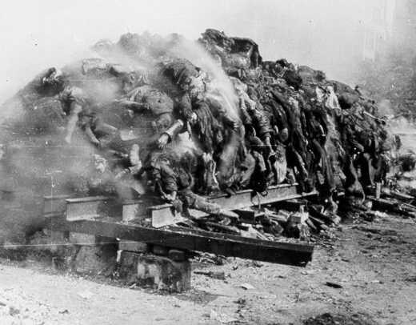
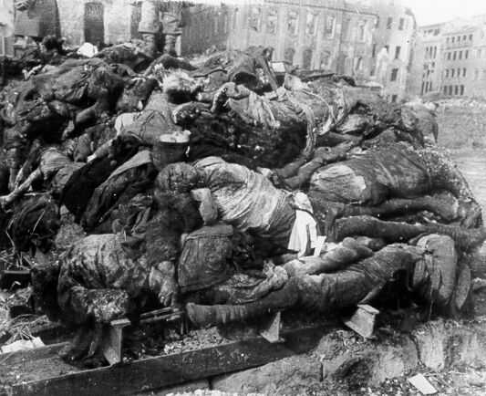

Bombing of Dresden: An Act of Genocide

|  | 'After a very short while,’ reports a woman, herself an evacuee from Cologne, trapped in another basement, ‘we had to put on our gas masks and goggles. Smoke and fumes were pouring through the breaches in the cellar walls from the cellars on both sides. There were no gas masks however for the infants. The people who suffered most were the elderly and the children. With my own eyes I had to watch as a three week old baby suffocated in the arms of its mother.’ |
'On the square there were thousands of people standing packed shoulder to shoulder, not panicking but very mute and still. Above them the fires raged. At the station entrance the heaps of dead children and others were already being piled up, as they were brought out of the station. ‘There must have been a children’s train at the station. More and more dead were stacked up. I took away one of their blankets for one of my babies, who were not dead but alive and terribly cold.’ In the morning some elderly S.A. men came and one of them helped me and my family to get through the town to safety.’ 1
The bombing of Dresden was just as horrific as the bombings of Hiroshima and Nagasaki. Dresden was an unarmed city, and was one of the major centers of culture in Germany. The bombing of Dresden was an act of genocide against the German people and given this occurred very late in the war; in March of 1945, the attack was done to further break the German morale. The attack was carried out with incendiary bombs [fire bombs], and to such an extent that nearly all of the oxygen was sucked out of the city and Dresden was reduced to ashes. The suffering of innocents was beyond the imagination. This bombing, like the bombings of Hiroshima and Nagasaki were direct attacks on unarmed civilians. The dates chosen for this specific onslaught on the German people coincided with the Christian holy day of "Ash Wednesday." Few people are aware of the fact that the 'Holy Bible' is nothing more than a book of Jewish witchcraft. For more about this see www.exposingchristianity.com. The Jews used this specific date [directing the spiritual energy of Christians] to reduce Dresden to ASHES.
| ‘The conflagration in
Dresden nourished the suspicion that the western Allies were concerned
only with the liquidation of the German Volk,’ suggested the
Inspector of German Fire Services in memoirs written after the war.
To those in Dresden who had survived the first attack, it seemed that
all they had been told about the Allies’ Morgenthau Plan was materialising
only too quickly.' 2 "Like most historic Jewish military operations, the great massacres of World War II occurred, not on the battlefield, but in peaceful neighborhood communities. This was in accordance with the dictate of the Book of Esther, which directs the Jews to massacre women and children, and to exterminate the families of those who dare to oppose them. |  |
Thus it was in Dresden, a historic German cultural center, where many thousands of German women and children, refugees from Communism had gathered. They were assured by the Red Cross that they would be safe, even while the Jewish generals were preparing to murder the men. The blood-maddened Jews desired not only to murder as many German civilians as possible but also to erase from history all evidence of Western civilization, the greatest examples of White culture which had been gathered in Dresden, the irreplaceable porcelain, the priceless paintings, the baroque furniture, and the rococo mansions with their poetry carved in stone. All was laid waste in a mass bombing attack in which some 300,000 German civilians died in a city which was not even a military target!
Like Dresden, Hiroshima was also an ancient cultural center, with no visible military objective. Its non- combatant families also died horribly by the hundreds of thousands. Many were pulverized instantly by the first atomic bomb ever used in a military operation, but thousands of other victims lived on for years, mangled and burned, their limbs and organs slowly rotting away from radiation poisoning. Even while the Japanese officials were desperately suing for peace, the Jews hastily ordered the dropping of a second atomic bomb, this one on Nagasaki, bringing off a second 'test' of their Hell bomb against helpless non-combatants, as prescribed by the Book of Esther. Again, hundreds of thousands of civilians died horribly."
"Before World War II, Dresden was called 'the Florence of the Elbe' and was regarded as one the world's most beautiful cities for its architecture and museums. Dresden's contribution to the war effort was minimal compared with other German cities. In February 1945, refugees fleeing the Russian advance in the east took refuge there."
"On the night of February 13, hundreds of RAF bombers descended on Dresden in two waves, dropping their lethal cargo indiscriminately over the city. The city's air defenses were so weak that only six Lancaster bombers were shot down. By the morning, some 800 British bombers had dropped 1,478 tons of high-explosive bombs and 1,182 tons of incendiaries on Dresden, creating a great firestorm that destroyed most of the city and killed numerous civilians. Later that day, as survivors made their way out of the smoldering city, over 300 U.S. bombers began bombing Dresden's railways, bridges, and transportation facilities, killing thousands more. On February 15, another 200 U.S. bombers continued their assault on the city's infrastructure. All told, the bombers of the U.S. Eighth Air Force dropped 954 tons of high-explosive bombs and 294 tons of incendiaries on Dresden. Later, the Eighth Air Force would drop 2,800 more tons of bombs on Dresden in three other attacks before the war's end."
"At the end of the war, Dresden was so badly damaged that the city was basically leveled. A handful of historic buildings--the Zwinger Palace, the Dresden State Opera House, and several fine churches--were carefully reconstructed out of the rubble, but the rest of the city was rebuilt with plain modern buildings. American author Kurt Vonnegut, who was a prisoner of war in Dresden during the Allied attack and tackled the controversial event in his book Slaughterhouse-Five, said of postwar Dresden, 'It looked a lot like Dayton, Ohio, more open spaces than Dayton has. There must be tons of human bone meal in the ground.'"
3
"‘The streets were littered with hundreds of corpses,’ S.S. Obergruppenführer Kehrl described, ‘Mothers with their children, youths and elderly people; sometimes their bodies were charred and burned, sometimes untouched; sometimes they were clothed, sometimes naked, with a waxen pallor like tailors’ dummies. They lay in every attitude, now quiet and composed, now hideously contorted, with the final struggle of death crying out in every line of their faces.’ Even those who had reached the public air raid shelters had not escaped; there scenes were little different, unusual only where panic had broken out as the people realised the nature of the fate they would never elude. ‘Here and there the positioning of the remains of the bones and skulls betrayed how the occupants had fought each other to escape from their buried prisons.’ When rescue teams finally cleared their way into the hermetically sealed bunkers and shelters after several weeks, the heat generated inside them had been so intense that nothing remained of their occupants; a soft undulating layer of grey ash was left in one bunker, from which the number of victims could only be estimated as ‘between 250 and 300’ by the doctors. Doctors were frequently employed in these gruesome tasks of enumeration, as the German Reich Statistical Office was up to January 31,1945 most meticulous about compiling its statistical tables and data. Pools of molten metal, which had formerly been the pots, pans, and cooking utensils taken into them, further testified to the uncommon temperatures in these bunkers. The task of recovering the bodies was allocated to the Sicherheitsund Hilfsdienst (S.H.D.), the Rescue and Repair Service, which was organised in five divisions: fire service, comprised of local firebrigades as distinct from the para-military national service; Instandsetzungsdienst, the service which repaired fractured gas mains, restored electricity and water supplies, and demolished dangerous structures; the medical service, organised by the German Red Cross; the decontamination service, for counter-measures during allied gas-attacks, and finally the veterinary service for tending wounded livestock and pets." 4
"Some people had met extremely unpleasant ends, when the central heating systems were hit and the basements had flooded with scalding hot water. People who had taken refuge in the static water tanks had also in some parts been scalded to death. The water tank on the corner of Muschinski-Strasse for example had apparently boiled in the intense heat of the night’s fire-storm. A score of corpses, their skin lobster-red from the heat, were floating in the water." 5
"In meteorology [he continued] the differences of temperature involved are of the order of 20° to 30° Celsius. In this firestorm they were of the order of 600°, 800° or even one thousand degrees Celsius. This explained the colossal violence of the fire-storm winds. Individuals were flung over and bowled like tumbleweed along the streets as the hurricane ripped all the clothes from their bodies. Crowds of people fleeing for safety were seized by the tornado, hurled into the flames and burned alive—a holocaust in the truest sense of the word." 6
The movie "Dresden" [2006] is a very realistic portrayal of the horrendous tradgedy. This movie is very graphic and extremely sad.
Kurt Vonnegut Jr's "Slaughterhouse-Five" [1972] also features the firebombing of Dresden.
References:
1Apocalypse 1945: The Destruction of Dresden by David Irving Copyright © Parforce UK Ltd, London, 1995 and 2005
2 Ibid.
3 This Day in History: Feb 13, 1945: Dresden devastated
4Apocalypse 1945: The Destruction of Dresden by David Irving Copyright © Parforce UK Ltd, London, 1995 and 2005
5 Ibid.
6 Ibid.